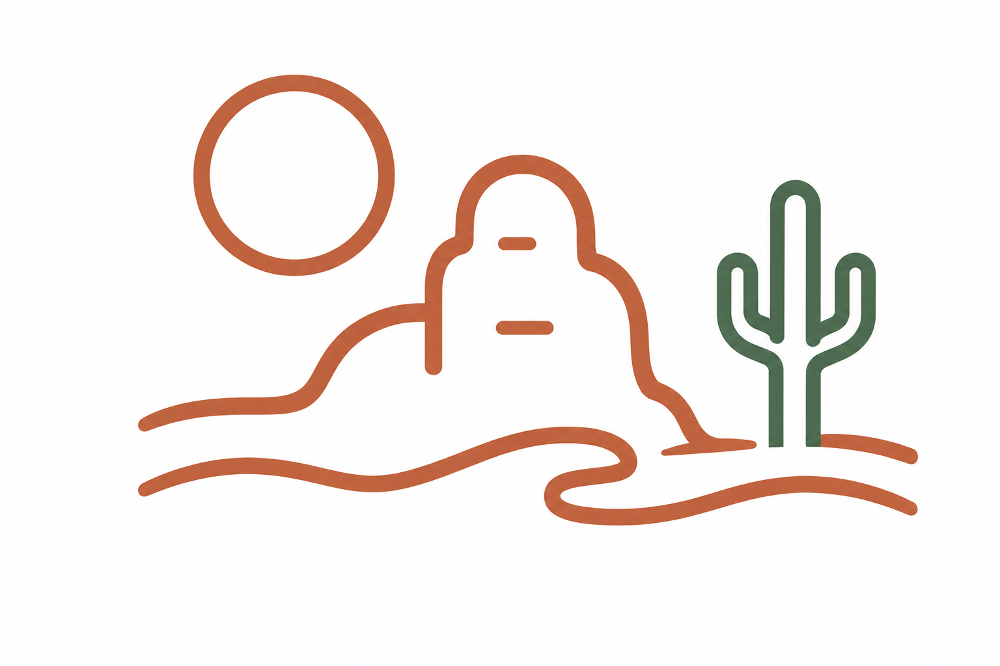
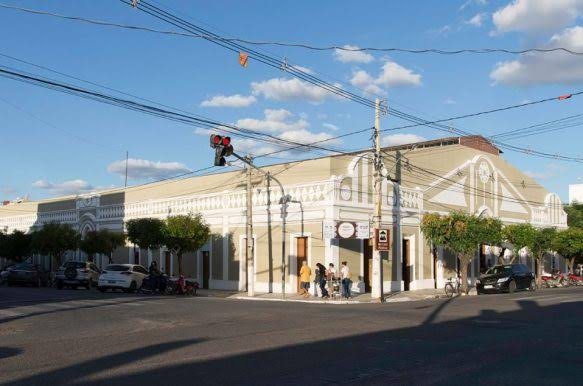
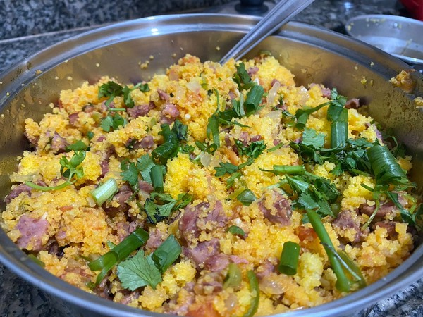

Acari
Pedra do Rosário, Furna da Onça e serestas inesquecíveis.
Região do Seridó
Natureza
Aventura
Ver destino

Início > Destinos
Explore os melhores lugares do Seridó.
Pedra do Rosário, Furna da Onça e serestas inesquecíveis.
Região do Seridó
Ilha de Sant'Ana, cultura e uma história que encanta.
Região do SeridóPedra da Boca, mirantes e a hospitalidade do interior.
Região do Seridó
Sabores típicos e experiências que contam a nossa história.
Região do SeridóTrilhas, mirantes e contato com a natureza.
Região do SeridóFestas, vaquejadas e cultura popular que movem o Seridó.
Região do Seridó